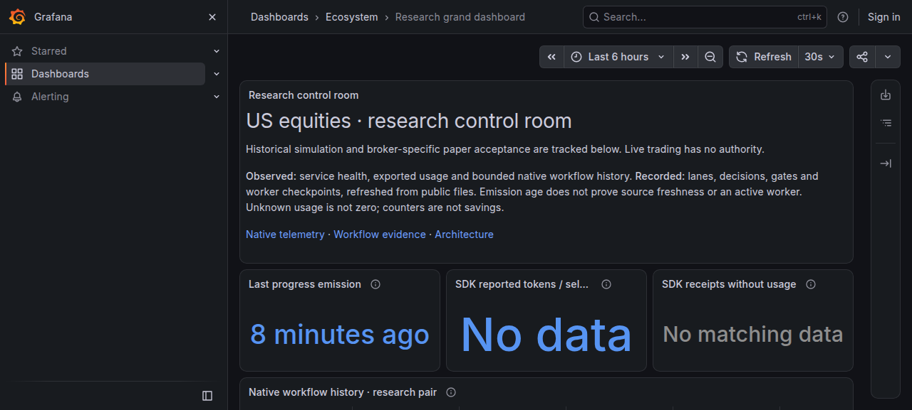
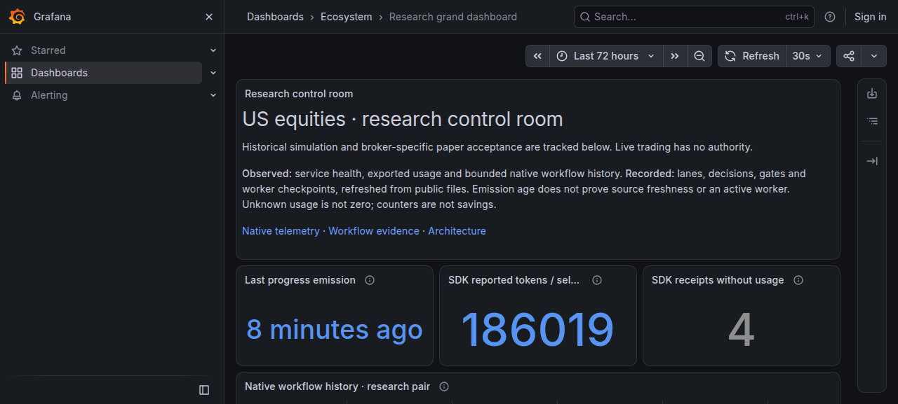
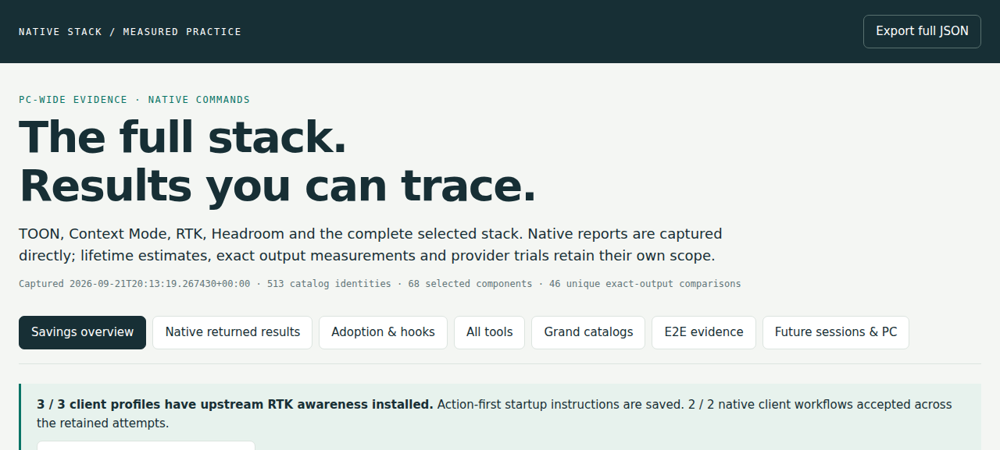

<!doctype html><html lang='en'><head><meta charset='utf-8'><meta name='viewport' content='width=device-width,initial-scale=1'><title>Native E2E evidence</title><style>
:root{--bg:#ffffff;--fg:#1a1f24;--muted:#5b6670;--line:#dfe3e7;--ok:#0b7a3b;--bad:#b3261e;--chip:#eef2f5;--mono:ui-monospace,SFMono-Regular,Menlo,Consolas,monospace}
@media (prefers-color-scheme: dark){:root:not([data-theme=light]){--bg:#0f1418;--fg:#e6edf3;--muted:#9aa5b1;--line:#2a333c;--ok:#4cc38a;--bad:#ff7b72;--chip:#1b232b}}
:root[data-theme=dark]{--bg:#0f1418;--fg:#e6edf3;--muted:#9aa5b1;--line:#2a333c;--ok:#4cc38a;--bad:#ff7b72;--chip:#1b232b}
body{margin:0;background:var(--bg);color:var(--fg);font:15px/1.5 system-ui,-apple-system,Segoe UI,Roboto,sans-serif}
main{max-width:1100px;margin:0 auto;padding:24px 16px}
h1{font-size:28px;margin:0 0 4px}h2{font-size:20px;margin:32px 0 8px;border-bottom:1px solid var(--line);padding-bottom:4px}
.meta{color:var(--muted);font-size:13px}
table{border-collapse:collapse;width:100%;font-size:14px}th,td{border-top:1px solid var(--line);padding:6px 8px;vertical-align:top;text-align:left}th{color:var(--muted);font-weight:600}
code,pre{font-family:var(--mono);font-size:12.5px}pre{background:var(--chip);padding:8px;border-radius:6px;overflow:auto;max-height:220px;white-space:pre-wrap;word-break:break-word;margin:4px 0}
.ok{color:var(--ok);font-weight:600}.bad{color:var(--bad);font-weight:600}.chip{display:inline-block;background:var(--chip);border-radius:999px;padding:1px 8px;font-size:12px;margin-right:4px}
figure{margin:12px 0}figure img{max-width:100%;border:1px solid var(--line);border-radius:6px}figcaption{color:var(--muted);font-size:13px}
.grid{display:grid;grid-template-columns:repeat(auto-fit,minmax(260px,1fr));gap:12px}.card{border:1px solid var(--line);border-radius:8px;padding:10px}
</style></head><body><main><p><a href="index.html#setup">Return to the full catalog</a> · <a href="../../evidence/artifacts/claude-upstream-checks-20260921/results.json">Structured returned results</a></p>
<h1>Native E2E evidence manifest</h1><p class='meta'>Generated 2026-09-21T20:54:00.335225+00:00 · 38/38 components returned exit 0 on every recorded command (including lifetime commands) · evidence classes: 14 functional, 18 readiness, 6 version-help · exit 0 alone is not a functional E2E · host linux-wsl</p>
<p>Each component runs its upstream command natively on this host; results are recorded verbatim (bounded, redacted). Rows carry one of three evidence classes: functional (the command exercises the capability and returns a result), readiness (version, sign-in, import, listing or health endpoint: installation and reachability only), version-help (invocability only). An exit-0 row is NOT a functional E2E unless its class says so; accepted task-specific receipts are linked where they exist. Lifetime figures are each tool&#x27;s own non-additive estimate, never provider savings. Verdicts are selection verdicts for this profile, not universal SOTA claims.</p>
<p class='meta'><strong>Reviewed public projection: host paths replaced by placeholders; private raw references and local process/session identifiers omitted. Dated source-host evidence.</strong>. Displayed text is a bounded, redacted excerpt; complete originals are retained privately with a recovery hash per command.</p>
<h2>Summary</h2><p class='meta'>Evidence class per row: a version/help-only row establishes installation and invocability; a functional row records one bounded returned call on this host. Neither is a provider-usage measurement.</p><table><tr><th>Component</th><th>Layer</th><th>Pin</th><th>Upstream command(s)</th><th>Evidence class</th><th>Lifetime figure (tool's own estimate)</th><th>Verdict</th></tr>
<tr><td><a href='#claude-code'>claude-code</a></td><td>native client</td><td><code>2.1.278</code></td><td><span class='ok'>exit 0</span></td><td>readiness</td><td>—</td><td>keep (native account; scoped)</td></tr>
<tr><td><a href='#codex-cli'>codex-cli</a></td><td>native client</td><td><code>rust-v0.155.1</code></td><td><span class='ok'>exit 0</span></td><td>readiness</td><td>—</td><td>keep (native account; scoped)</td></tr>
<tr><td><a href='#codex-plugin-cc'>codex-plugin-cc</a></td><td>cross-family review</td><td><code>v1.0.6</code></td><td><span class='ok'>exit 0</span></td><td>readiness</td><td>—</td><td>keep-but-compare</td></tr>
<tr><td><a href='#rtk'>rtk</a></td><td>token efficiency</td><td><code>v0.49.0</code></td><td><span class='ok'>exit 0</span></td><td>functional (lifetime report command returned)</td><td>RTK retained-history estimate: total_saved 3655435 tokens over 1209 commands (avg 24.76%)</td><td>keep-but-compare (hook on/off A/B pending)</td></tr>
<tr><td><a href='#context-mode'>context-mode</a></td><td>token efficiency</td><td><code>1.0.169</code></td><td><span class='ok'>exit 0</span></td><td>readiness</td><td>snapshots: [{&quot;file&quot;: &quot;overlapping-runtime-snapshot-1&quot;, &quot;tokens_saved_lifetime&quot;: 623360, &quot;total_calls&quot;: 0, &quot;updated&quot;: &quot;2026-09-21T20:54:04.268046+00:00&quot;}, {&quot;file&quot;: &quot;overlapping-runtime-snapshot-2&quot;, &quot;tokens_saved_lifetime&quot;: 623360, &quot;total_calls&quot;: 0, &quot;updated&quot;: &quot;2026-09-21T20:54:01.721519+00:00&quot;}, {&quot;file&quot;: &quot;overlapping-runtime-snapshot-3&quot;, &quot;tokens_saved_lifetime&quot;: 623360, &quot;total_calls&quot;: 0, &quot;updated&quot;: &quot;2026-09-21T20:54:01.469129+00:00&quot;}]</td><td>keep-but-compare</td></tr>
<tr><td><a href='#headroom'>headroom</a></td><td>token efficiency</td><td><code>0.37.0</code></td><td><span class='ok'>exit 0</span></td><td>functional (savings report command returned)</td><td>Headroom savings --json: lifetime {&quot;tokens_saved&quot;: 0, &quot;tokens_before&quot;: 0, &quot;cost_usd&quot;: 0.0, &quot;calls&quot;: 0} | windows.last_30_days {&quot;tokens_saved&quot;: 0, &quot;tokens_before&quot;: 0, &quot;cost_usd&quot;: 0.0, &quot;calls&quot;: 0}</td><td>keep (lossless recovery vs LLMLingua)</td></tr>
<tr><td><a href='#toon'>toon</a></td><td>token efficiency</td><td><code>4.1.1</code></td><td><span class='ok'>exit 0</span></td><td>functional (exact JSON round trip)</td><td>—</td><td>replace-candidate for the catalog artifact class; valid for small tabular fixtures</td></tr>
<tr><td><a href='#jcodemunch'>jcodemunch</a></td><td>code retrieval</td><td><code>1.108.319</code></td><td><span class='ok'>exit 0</span></td><td>functional (MCP stats call returned)</td><td>jCodeMunch persistent estimate total_tokens_saved 59640</td><td>keep-but-compare</td></tr>
<tr><td><a href='#repomix'>repomix</a></td><td>repo packing</td><td><code>v1.18.1</code></td><td><span class='ok'>exit 0</span></td><td>functional (packed one source file)</td><td>—</td><td>keep (tree-sitter compress, token budget, secret scan absent in gitingest/code2prompt)</td></tr>
<tr><td><a href='#ccusage'>ccusage</a></td><td>usage accounting</td><td><code>v20.0.24</code></td><td><span class='ok'>exit 0</span></td><td>functional (offline usage report returned)</td><td>ccusage offline daily rows (Codex, UTC): {&quot;days&quot;: 4, &quot;today&quot;: [{&quot;date&quot;: &quot;2026-09-21&quot;, &quot;inputTokens&quot;: 980977, &quot;outputTokens&quot;: 70030, &quot;totalTokens&quot;: 10277119}]}</td><td>keep (scoped)</td></tr>
<tr><td><a href='#qmd'>qmd</a></td><td>document retrieval</td><td><code>v2.8.3</code></td><td><span class='ok'>exit 0</span></td><td>functional (BM25 search returned hits)</td><td>—</td><td>keep (BM25 default; four-lane fixture bench)</td></tr>
<tr><td><a href='#serena'>serena</a></td><td>symbol navigation</td><td><code>c6fbd1c</code></td><td><span class='ok'>exit 0</span></td><td>readiness</td><td>—</td><td>keep (scoped; pin reason to be recorded)</td></tr>
<tr><td><a href='#socraticode'>socraticode</a></td><td>semantic code RAG</td><td><code>1.14.0</code></td><td><span class='ok'>exit 0</span></td><td>functional (semantic search returned results)</td><td>—</td><td>keep (local watcher vs WeKnora)</td></tr>
<tr><td><a href='#qdrant'>qdrant</a></td><td>vector store</td><td><code>v1.19.1</code></td><td><span class='ok'>exit 0</span></td><td>readiness</td><td>—</td><td>keep (by consumer)</td></tr>
<tr><td><a href='#vllm-nemotron-embed'>vllm-nemotron-embed</a></td><td>embedding runtime</td><td><code>0.25.0 (model-card hold; 0.29.0 unused)</code></td><td><span class='ok'>exit 0</span></td><td>functional (local /v1/embeddings call returned a vector)</td><td>—</td><td>keep-but-compare</td></tr>
<tr><td><a href='#ai-memory'>ai-memory</a></td><td>durable memory</td><td><code>v2.3.2</code></td><td><span class='ok'>exit 0</span></td><td>readiness</td><td>—</td><td>keep-but-compare (memory of record)</td></tr>
<tr><td><a href='#dagu'>dagu</a></td><td>scheduling</td><td><code>v2.16.6 (v2.17.0 released 2026-09-21)</code></td><td><span class='ok'>exit 0</span></td><td>readiness</td><td>—</td><td>keep-but-compare</td></tr>
<tr><td><a href='#grafana'>grafana</a></td><td>observability</td><td><code>v13.2.2</code></td><td><span class='ok'>exit 0</span></td><td>readiness</td><td>—</td><td>keep-but-compare</td></tr>
<tr><td><a href='#prometheus'>prometheus</a></td><td>observability</td><td><code>v3.14.0</code></td><td><span class='ok'>exit 0</span></td><td>readiness</td><td>—</td><td>keep-but-compare</td></tr>
<tr><td><a href='#loki'>loki</a></td><td>observability</td><td><code>v3.7.8</code></td><td><span class='ok'>exit 0</span></td><td>readiness</td><td>—</td><td>keep-but-compare</td></tr>
<tr><td><a href='#alertmanager'>alertmanager</a></td><td>observability</td><td><code>v0.34.1</code></td><td><span class='ok'>exit 0</span></td><td>readiness</td><td>—</td><td>keep-but-compare</td></tr>
<tr><td><a href='#otelcol-contrib'>otelcol-contrib</a></td><td>observability</td><td><code>v0.161.0</code></td><td><span class='ok'>exit 0</span></td><td>readiness</td><td>—</td><td>keep (scoped)</td></tr>
<tr><td><a href='#agentsview'>agentsview</a></td><td>session archive</td><td><code>v0.43.0 (v0.44.0 released 2026-09-21)</code></td><td><span class='ok'>exit 0</span></td><td>version-help</td><td>—</td><td>keep-but-compare</td></tr>
<tr><td><a href='#mcporter'>mcporter</a></td><td>MCP client</td><td><code>0.13.13</code></td><td><span class='ok'>exit 0</span></td><td>readiness</td><td>—</td><td>keep (scoped)</td></tr>
<tr><td><a href='#markitdown'>markitdown</a></td><td>document ingestion</td><td><code>0.1.7</code></td><td><span class='ok'>exit 0</span></td><td>functional (converted a Markdown file)</td><td>—</td><td>keep (scoped)</td></tr>
<tr><td><a href='#openresearch'>openresearch</a></td><td>literature discovery</td><td><code>v0.2.7</code></td><td><span class='ok'>exit 0</span></td><td>version-help</td><td>—</td><td>keep (scoped)</td></tr>
<tr><td><a href='#tavily-cli'>tavily-cli</a></td><td>web research</td><td><code>0.1.8</code></td><td><span class='ok'>exit 0</span></td><td>version-help</td><td>—</td><td>keep-but-compare</td></tr>
<tr><td><a href='#worktrunk'>worktrunk</a></td><td>worktrees</td><td><code>v0.79.0</code></td><td><span class='ok'>exit 0</span></td><td>readiness</td><td>—</td><td>keep-but-compare</td></tr>
<tr><td><a href='#difftastic'>difftastic</a></td><td>review tools</td><td><code>0.71.0</code></td><td><span class='ok'>exit 0</span></td><td>functional (structural diff returned)</td><td>—</td><td>keep (scoped)</td></tr>
<tr><td><a href='#ast-grep'>ast-grep</a></td><td>structural search</td><td><code>0.45.3 (versioned prefix 2026-09-21)</code></td><td><span class='ok'>exit 0</span></td><td>functional (structural search returned matches)</td><td>—</td><td>keep (scoped)</td></tr>
<tr><td><a href='#gitleaks'>gitleaks</a></td><td>supply chain</td><td><code>v8.30.1</code></td><td><span class='ok'>exit 0</span></td><td>functional (directory scan completed)</td><td>—</td><td>keep-but-compare</td></tr>
<tr><td><a href='#zizmor'>zizmor</a></td><td>CI security</td><td><code>v1.30.1</code></td><td><span class='ok'>exit 0</span></td><td>version-help</td><td>—</td><td>keep (scoped)</td></tr>
<tr><td><a href='#promptfoo'>promptfoo</a></td><td>evaluation</td><td><code>0.123.1</code></td><td><span class='ok'>exit 0</span></td><td>version-help</td><td>—</td><td>keep-but-compare</td></tr>
<tr><td><a href='#agent-browser'>agent-browser</a></td><td>browser automation</td><td><code>v0.38.1</code></td><td><span class='ok'>exit 0</span></td><td>readiness</td><td>—</td><td>keep (scoped)</td></tr>
<tr><td><a href='#beads'>beads</a></td><td>task queue</td><td><code>v1.3.0</code></td><td><span class='ok'>exit 0</span></td><td>version-help</td><td>—</td><td>keep-but-compare</td></tr>
<tr><td><a href='#nautilus-trader'>nautilus-trader</a></td><td>trading engine</td><td><code>v2.0.0rc5 (1b0a49d2)</code></td><td><span class='ok'>exit 0</span></td><td>readiness</td><td>—</td><td>keep (user-selected destination)</td></tr>
<tr><td><a href='#lean'>lean</a></td><td>historical comparison engine</td><td><code>985ef30 (+ remediation)</code></td><td><span class='ok'>exit 0</span></td><td>functional (retained-output unit tests; no engine run)</td><td>—</td><td>keep (oracle)</td></tr>
<tr><td><a href='#uv'>uv</a></td><td>python tooling</td><td><code>0.12.17</code></td><td><span class='ok'>exit 0</span></td><td>readiness</td><td>—</td><td>keep (scoped)</td></tr>
</table>
<h2>Dashboard E2E (screenshots reviewed)</h2><div class='grid'>
<figure class='card'><figcaption>Grafana grand dashboard, last 6 hours (SDK panels legitimately empty in range)</figcaption></figure>
<figure class='card'><figcaption>Grafana grand dashboard, last 72 hours (SDK reported tokens 186,019; 4 receipts without usage; Loki max_query_lookback is 72 h, so 7-day ranges error)</figcaption></figure>
<figure class='card'><figcaption>Native lifetime token manifest page (ecosystem-token-report refresh, 2026-09-21T20:13:19Z)</figcaption></figure>
</div>
<h2>Per-component returned results</h2>
<h3 id='claude-code'>claude-code <span class='chip'>native client</span> <a class='meta' href='https://github.com/anthropics/claude-code'>https://github.com/anthropics/claude-code</a></h3>
<p class='meta'>Pin: <code>2.1.278</code> · Evidence class: readiness · Verdict: keep (native account; scoped)</p>
<p class="meta">Accepted task-specific receipts: <a href="../../evidence/artifacts/native-claude-coop-20260921/persistent-profile.json">evidence/artifacts/native-claude-coop-20260921/persistent-profile.json</a></p>
<p><code>claude --version</code> → <span class='ok'>exit 0</span> · 8 ms · stdout 22 bytes · sha256 of the published text <code>b97880de588e4485…</code></p>
<pre>2.1.278 (Claude Code)</pre>
<p><code>claude mcp list</code> → <span class='ok'>exit 0</span> · 2231 ms · stdout 1303 bytes · sha256 of the published text <code>0d521280db880a99…</code> · excerpt truncated; full-output sha256 <code>b19008795f1028a4…</code></p>
<pre>Checking MCP server health…

claude.ai Claude Docs: https://api.anthropic.com/v1/pages/mcp - ✔ Connected
plugin:context-mode:context-mode: $STACK_HOME/tools/node-v24.21.0/bin/node $HOME/.claude/plugins/cache/context-mode/context-mode/1.0.169/start.mjs - ✔ Connected
serena: $STACK_HOME/bin/serena-context start-mcp-server --transport stdio --project-from-cwd --context claude-code --enable-web-dashboard true --open-web-dashboard false --enable-gui-log-window false - ✔ Connected
ai-memory: http://127.0.0.1:49374/mcp (HTTP) - ✔ Connected
socraticode: $STACK_HOME/bin/node $STACK_HOME/tools/socraticode-1.14.0/lib/node_modules/socraticode/dist/index.js - ✔ Connected
jcodemunch: $STACK_HOME/bin/jcodemunch-mcp  - ✔ Connected

MCP config diagnostics </pre>
<h3 id='codex-cli'>codex-cli <span class='chip'>native client</span> <a class='meta' href='https://github.com/openai/codex'>https://github.com/openai/codex</a></h3>
<p class='meta'>Pin: <code>rust-v0.155.1</code> · Evidence class: readiness · Verdict: keep (native account; scoped)</p>
<p><code>codex --version</code> → <span class='ok'>exit 0</span> · 7 ms · stdout 18 bytes · sha256 of the published text <code>3591ec6f5ad05568…</code></p>
<pre>codex-cli 0.155.1</pre>
<p><code>codex login status</code> → <span class='ok'>exit 0</span> · 24 ms · stdout 0 bytes · sha256 of the published text <code>e3b0c44298fc1c14…</code></p>
<pre class='meta'>stderr: Logged in using ChatGPT</pre>
<p><code>codex --help</code> → <span class='ok'>exit 0</span> · 7 ms · stdout 5668 bytes · sha256 of the published text <code>5322b32d2bcbd6cb…</code> · excerpt truncated; full-output sha256 <code>46fd93b594f161a1…</code></p>
<pre>Codex CLI

If no subcommand is specified, options will be forwarded to the interactive CLI.

Usage: codex [OPTIONS] [PROMPT]
       codex [OPTIONS] &lt;COMMAND&gt; [ARGS]

Commands:
  agents            Browse all agent sessions on the shared local app-server daemon
  exec              Run Codex non-interactively [aliases: e]
  review            Run a code review non-interactively
  login             Manage login
  logout            Remove stored authentication credentials
  mcp               Manage external MCP servers for Codex
  plugin            Manage Codex plugins
  app-server        [experimental] Run the app server or related tooling
  remote-control    [experimental] Manage the app-server daemon with remote control enabled
  completion        Generate shell completion scripts
  update            Update Codex to the latest version
  doctor            Diagnose local Codex installation, c</pre>
<h3 id='codex-plugin-cc'>codex-plugin-cc <span class='chip'>cross-family review</span> <a class='meta' href='https://github.com/openai/codex-plugin-cc'>https://github.com/openai/codex-plugin-cc</a></h3>
<p class='meta'>Pin: <code>v1.0.6</code> · Evidence class: readiness · Verdict: keep-but-compare</p>
<p class="meta">Accepted task-specific receipts: <a href="../../evidence/artifacts/foundation-rd-20260921/native-review.json">evidence/artifacts/foundation-rd-20260921/native-review.json</a></p>
<p><code>node $HOME/.claude/plugins/cache/openai-codex/codex/1.0.6/scripts/codex-companion.mjs setup --json</code> → <span class='ok'>exit 0</span> · 271 ms · stdout 886 bytes · sha256 of the published text <code>b040cd2eee342928…</code></p>
<pre>{
  &quot;ready&quot;: true,
  &quot;node&quot;: {
    &quot;available&quot;: true,
    &quot;detail&quot;: &quot;v24.21.0&quot;
  },
  &quot;npm&quot;: {
    &quot;available&quot;: true,
    &quot;detail&quot;: &quot;11.19.0&quot;
  },
  &quot;codex&quot;: {
    &quot;available&quot;: true,
    &quot;detail&quot;: &quot;codex-cli 0.155.1; advanced runtime available&quot;
  },
  &quot;auth&quot;: {
    &quot;available&quot;: true,
    &quot;loggedIn&quot;: true,
    &quot;detail&quot;: &quot;ChatGPT login active for &lt;redacted-email&gt;&quot;,
    &quot;source&quot;: &quot;app-server&quot;,
    &quot;authMethod&quot;: &quot;chatgpt&quot;,
    &quot;verified&quot;: true,
    &quot;requiresOpenaiAuth&quot;: true,
    &quot;provider&quot;: null
  },
  &quot;sessionRuntime&quot;: {
    &quot;mode&quot;: &quot;direct&quot;,
    &quot;label&quot;: &quot;direct startup&quot;,
    &quot;detail&quot;: &quot;No shared Codex runtime is active yet. The first review or task command will start one on demand.&quot;,
    &quot;endpoint&quot;: null
  },
  &quot;reviewGateEnabled&quot;: false,
  &quot;actionsTaken&quot;: [],
  &quot;nextSteps&quot;: [
    &quot;Optional: run `/codex:setup --enable-review-gate` to require a fresh review before stop.&quot;
  ]
}</pre>
<h3 id='rtk'>rtk <span class='chip'>token efficiency</span> <a class='meta' href='https://github.com/rtk-ai/rtk'>https://github.com/rtk-ai/rtk</a></h3>
<p class='meta'>Pin: <code>v0.49.0</code> · Evidence class: functional (lifetime report command returned) · Verdict: keep-but-compare (hook on/off A/B pending)</p>
<p><code>rtk --version</code> → <span class='ok'>exit 0</span> · 1 ms · stdout 11 bytes · sha256 of the published text <code>de2af3ac882efc47…</code></p>
<pre>rtk 0.49.0</pre>
<p><code>rtk gain --format json</code> → <span class='ok'>exit 0</span> · 3 ms · stdout 232 bytes · sha256 of the published text <code>cad3fba556b30146…</code></p>
<pre>{
  &quot;summary&quot;: {
    &quot;total_commands&quot;: 1209,
    &quot;total_input&quot;: 14761490,
    &quot;total_output&quot;: 11106455,
    &quot;total_saved&quot;: 3655435,
    &quot;avg_savings_pct&quot;: 24.76331996295767,
    &quot;total_time_ms&quot;: 575692,
    &quot;avg_time_ms&quot;: 476
  }
}</pre>
<h3 id='context-mode'>context-mode <span class='chip'>token efficiency</span> <a class='meta' href='https://github.com/mksglu/context-mode'>https://github.com/mksglu/context-mode</a></h3>
<p class='meta'>Pin: <code>1.0.169</code> · Evidence class: readiness · Verdict: keep-but-compare</p>
<p><code>python3 -c import json;d=json.load(open(&#x27;$HOME/.claude/plugins/cache/context-mode/context-mode/1.0.169/.claude-plugin/plugin.json&#x27;));print(d.get(&#x27;name&#x27;),d.get(&#x27;version&#x27;))</code> → <span class='ok'>exit 0</span> · 15 ms · stdout 21 bytes · sha256 of the published text <code>2478b59662ec6c84…</code></p>
<pre>context-mode 1.0.169</pre>
<p><code>bash -o pipefail -c claude mcp list &gt; $TMP/e2e-mcp.txt 2&gt;/dev/null; grep -i -c &#x27;context-mode.*Connected&#x27; $TMP/e2e-mcp.txt</code> → <span class='ok'>exit 0</span> · 1767 ms · stdout 2 bytes · sha256 of the published text <code>6b86b273ff34fce1…</code></p>
<pre>1</pre>
<h3 id='headroom'>headroom <span class='chip'>token efficiency</span> <a class='meta' href='https://github.com/headroomlabs-ai/headroom'>https://github.com/headroomlabs-ai/headroom</a></h3>
<p class='meta'>Pin: <code>0.37.0</code> · Evidence class: functional (savings report command returned) · Verdict: keep (lossless recovery vs LLMLingua)</p>
<p><code>headroom --version</code> → <span class='ok'>exit 0</span> · 151 ms · stdout 25 bytes · sha256 of the published text <code>ee28d6e6789556b6…</code></p>
<pre>headroom, version 0.37.0</pre>
<p><code>headroom savings --json</code> → <span class='ok'>exit 0</span> · 152 ms · stdout 738 bytes · sha256 of the published text <code>47838e5e19a1a9db…</code></p>
<pre>{
  &quot;schema_version&quot;: 1,
  &quot;path&quot;: &quot;$HOME/.headroom/savings_events.jsonl&quot;,
  &quot;top_model&quot;: &quot;unknown&quot;,
  &quot;lifetime&quot;: {
    &quot;tokens_saved&quot;: 0,
    &quot;tokens_before&quot;: 0,
    &quot;cost_usd&quot;: 0.0,
    &quot;calls&quot;: 0,
    &quot;savings_percent&quot;: 0.0
  },
  &quot;windows&quot;: {
    &quot;today&quot;: {
      &quot;tokens_saved&quot;: 0,
      &quot;tokens_before&quot;: 0,
      &quot;cost_usd&quot;: 0.0,
      &quot;calls&quot;: 0,
      &quot;savings_percent&quot;: 0.0
    },
    &quot;last_7_days&quot;: {
      &quot;tokens_saved&quot;: 0,
      &quot;tokens_before&quot;: 0,
      &quot;cost_usd&quot;: 0.0,
      &quot;calls&quot;: 0,
      &quot;savings_percent&quot;: 0.0
    },
    &quot;last_30_days&quot;: {
      &quot;tokens_saved&quot;: 0,
      &quot;tokens_before&quot;: 0,
      &quot;cost_usd&quot;: 0.0,
      &quot;calls&quot;: 0,
      &quot;savings_percent&quot;: 0.0
    }
  },
  &quot;by_model&quot;: [],
  &quot;by_client&quot;: []
}</pre>
<h3 id='toon'>toon <span class='chip'>token efficiency</span> <a class='meta' href='https://github.com/toon-format/toon'>https://github.com/toon-format/toon</a></h3>
<p class='meta'>Pin: <code>4.1.1</code> · Evidence class: functional (exact JSON round trip) · Verdict: replace-candidate for the catalog artifact class; valid for small tabular fixtures</p>
<p><code>toon --version</code> → <span class='ok'>exit 0</span> · 25 ms · stdout 6 bytes · sha256 of the published text <code>da046477e641cdaa…</code></p>
<pre>4.1.1</pre>
<p><code>bash -o pipefail -c printf &#x27;{&quot;items&quot;:[{&quot;id&quot;:1,&quot;n&quot;:&quot;a&quot;},{&quot;id&quot;:2,&quot;n&quot;:&quot;b&quot;}]}&#x27; &gt; $TMP/toon-e2e.json &amp;&amp; toon -e $TMP/toon-e2e.json | toon -d - | python3 -c &#x27;import json,sys;print(json.load(sys.stdin)==json.load(open(&quot;$TMP/toon-e2e.json&quot;)))&#x27;</code> → <span class='ok'>exit 0</span> · 34 ms · stdout 5 bytes · sha256 of the published text <code>3cbc87c7681f34db…</code></p>
<pre>True</pre>
<h3 id='jcodemunch'>jcodemunch <span class='chip'>code retrieval</span> <a class='meta' href='https://github.com/jgravelle/jcodemunch-mcp'>https://github.com/jgravelle/jcodemunch-mcp</a></h3>
<p class='meta'>Pin: <code>1.108.319</code> · Evidence class: functional (MCP stats call returned) · Verdict: keep-but-compare</p>
<p><code>jcodemunch-mcp --version</code> → <span class='ok'>exit 0</span> · 345 ms · stdout 25 bytes · sha256 of the published text <code>536b349143c09025…</code></p>
<pre>jcodemunch-mcp 1.108.319</pre>
<p><code>mcporter call --stdio jcodemunch-mcp --env CODE_INDEX_PATH=$HOME/.code-index --env JCODEMUNCH_SHARE_SAVINGS=0 --tool order --args {&quot;action&quot;:&quot;get_session_stats&quot;,&quot;args&quot;:{}} --output json</code> → <span class='ok'>exit 0</span> · 644 ms · stdout 6257 bytes · sha256 of the published text <code>042db78647f30163…</code> · excerpt truncated; full-output sha256 <code>e0d6ad084a4bac3e…</code></p>
<pre>{
  &quot;session_tokens_saved&quot;: 0,
  &quot;session_calls&quot;: 0,
  &quot;session_duration_s&quot;: 0.1,
  &quot;session_response_tokens&quot;: 0,
  &quot;total_tokens_saved&quot;: 59640,
  &quot;total_tokens_saved_basis&quot;: {
    &quot;generation&quot;: 2,
    &quot;first_generation&quot;: 2,
    &quot;mixed_basis&quot;: false
  },
  &quot;lifetime_by_tool&quot;: {
    &quot;get_symbol_source&quot;: 59640,
    &quot;search_symbols&quot;: 0
  },
  &quot;lifetime_by_tool_since&quot;: &quot;2026-09-20&quot;,
  &quot;lifetime_unattributed&quot;: 0,
  &quot;tool_breakdown&quot;: {},
  &quot;tool_calls&quot;: {},
  &quot;savings_per_call&quot;: 0,
  &quot;result_cache&quot;: {
    &quot;total_hits&quot;: 0,
    &quot;total_misses&quot;: 0,
    &quot;hit_rate&quot;: 0,
    &quot;cached_entries&quot;: 0
  },
  &quot;latency_per_tool&quot;: {},
  &quot;session_cost_avoided&quot;: {
    &quot;claude_opus_4_6&quot;: 0,
    &quot;claude_sonnet_4_6&quot;: 0,
    &quot;claude_haiku_4_5&quot;: 0,
    &quot;gpt5_latest&quot;: 0
  },
  &quot;total_cost_avoided&quot;: {
    &quot;claude_opus_4_6&quot;: 0.2982,
    &quot;claude_sonnet_4_6&quot;: 0.1789,
    &quot;claude_haiku_4_5&quot;: 0.0596,
    &quot;gpt5_latest&quot;: 0.596</pre>
<h3 id='repomix'>repomix <span class='chip'>repo packing</span> <a class='meta' href='https://github.com/yamadashy/repomix'>https://github.com/yamadashy/repomix</a></h3>
<p class='meta'>Pin: <code>v1.18.1</code> · Evidence class: functional (packed one source file) · Verdict: keep (tree-sitter compress, token budget, secret scan absent in gitingest/code2prompt)</p>
<p><code>repomix --version</code> → <span class='ok'>exit 0</span> · 31 ms · stdout 7 bytes · sha256 of the published text <code>65c2443215b084bc…</code></p>
<pre>1.18.1</pre>
<p><code>bash -o pipefail -c repomix --include tools/ecosystem/e2e_manifest.py --style plain --output $TMP/repomix-e2e.txt --quiet --no-git-sort-by-changes &amp;&amp; wc -c &lt; $TMP/repomix-e2e.txt</code> → <span class='ok'>exit 0</span> · 269 ms · stdout 6 bytes · sha256 of the published text <code>c523613877b206aa…</code></p>
<pre>19101</pre>
<h3 id='ccusage'>ccusage <span class='chip'>usage accounting</span> <a class='meta' href='https://github.com/ccusage/ccusage'>https://github.com/ccusage/ccusage</a></h3>
<p class='meta'>Pin: <code>v20.0.24</code> · Evidence class: functional (offline usage report returned) · Verdict: keep (scoped)</p>
<p><code>ccusage --version</code> → <span class='ok'>exit 0</span> · 27 ms · stdout 16 bytes · sha256 of the published text <code>d44bb1d4c86f3583…</code></p>
<pre>ccusage 20.0.24</pre>
<p><code>bash -o pipefail -c env CODEX_HOME=$HOME/.codex ccusage codex daily --offline --no-cost --json --timezone UTC --config /dev/null | python3 -c &#x27;import json,sys;d=json.load(sys.stdin);r=(d.get(&quot;daily&quot;) or d.get(&quot;data&quot;) or []);print(json.dumps({&quot;days&quot;:len(r),&quot;today&quot;:[{k:x.get(k) for k in (&quot;date&quot;,&quot;inputTokens&quot;,&quot;outputTokens&quot;,&quot;totalTokens&quot;)} for x in r if str(x.get(&quot;date&quot;,&quot;&quot;)).startswith(&quot;2026-09-21&quot;)]}))&#x27;</code> → <span class='ok'>exit 0</span> · 53 ms · stdout 118 bytes · sha256 of the published text <code>6b92e24d5bec9b31…</code></p>
<pre>{&quot;days&quot;: 4, &quot;today&quot;: [{&quot;date&quot;: &quot;2026-09-21&quot;, &quot;inputTokens&quot;: 980977, &quot;outputTokens&quot;: 70030, &quot;totalTokens&quot;: 10277119}]}</pre>
<h3 id='qmd'>qmd <span class='chip'>document retrieval</span> <a class='meta' href='https://github.com/tobi/qmd'>https://github.com/tobi/qmd</a></h3>
<p class='meta'>Pin: <code>v2.8.3</code> · Evidence class: functional (BM25 search returned hits) · Verdict: keep (BM25 default; four-lane fixture bench)</p>
<p class="meta">Accepted task-specific receipts: <a href="../../evidence/artifacts/foundation-rd-20260921/qmd-comparison.json">evidence/artifacts/foundation-rd-20260921/qmd-comparison.json</a></p>
<p><code>qmd --version</code> → <span class='ok'>exit 0</span> · 88 ms · stdout 20 bytes · sha256 of the published text <code>60fe2938ba401008…</code></p>
<pre>qmd 2.8.3 (facd35e)</pre>
<p><code>qmd --index native-agent-stack-catalog search paper lane policy -c us-equities-foundation -n 2</code> → <span class='ok'>exit 0</span> · 102 ms · stdout 1085 bytes · sha256 of the published text <code>211712a1c4b2509a…</code> · excerpt truncated; full-output sha256 <code>0f763cf77dbc9c39…</code></p>
<pre>qmd://us-equities-foundation/alpaca-paper/README.md?index=native-agent-stack-catalog:6 #3a67b2
Title: Bounded Alpaca paper order lifecycle
Score:  70%

@@ -5,4 @@ (4 before, 99 after)
quantity. It does not select a strategy or establish profitability. The separate
[paper-lane policy](../../../docs/paper-lane-policy.md) authorizes these bounded
paper orders without another approval token.


qmd://us-equities-foundation/architecture/README.md?index=native-agent-stack-catalog:26 #707a15
Title: Architecture and next acceptance roles
Score:  70%

@@ -25,4 @@ (24 before, 192 after)
| --- | --- | --- |
| User / product owner | Choose objectives, acceptable risk, capital assumptions, account/data entitlements and operating budget | A numeric research specification; paper E2E already authorized under the [paper policy](../../../docs/paper-lane-policy.md) |
| Coordinator | Select the smallest arc</pre>
<h3 id='serena'>serena <span class='chip'>symbol navigation</span> <a class='meta' href='https://github.com/oraios/serena'>https://github.com/oraios/serena</a></h3>
<p class='meta'>Pin: <code>c6fbd1c</code> · Evidence class: readiness · Verdict: keep (scoped; pin reason to be recorded)</p>
<p><code>serena-context --version</code> → <span class='ok'>exit 0</span> · 484 ms · stdout 18 bytes · sha256 of the published text <code>5f3228444174811e…</code></p>
<pre>Serena 2.0.0.dev0</pre>
<p><code>bash -o pipefail -c serena-context --help &gt; $TMP/e2e-help.txt 2&gt;&amp;1; rc=$?; sed -n 1p $TMP/e2e-help.txt; exit $rc</code> → <span class='ok'>exit 0</span> · 487 ms · stdout 42 bytes · sha256 of the published text <code>2f882966ac36bc58…</code></p>
<pre>Usage: serena [OPTIONS] COMMAND [ARGS]...</pre>
<h3 id='socraticode'>socraticode <span class='chip'>semantic code RAG</span> <a class='meta' href='https://github.com/giancarloerra/SocratiCode'>https://github.com/giancarloerra/SocratiCode</a></h3>
<p class='meta'>Pin: <code>1.14.0</code> · Evidence class: functional (semantic search returned results) · Verdict: keep (local watcher vs WeKnora)</p>
<p><code>mcporter --config $ECOSYSTEM_REPO/config/mcporter.json call socraticode codebase_status --args {&quot;projectPath&quot;:&quot;$HOME/code/agent-lab&quot;}</code> → <span class='ok'>exit 0</span> · 541 ms · stdout 334 bytes · sha256 of the published text <code>86ce7c9785ba7194…</code></p>
<pre>Project: $HOME/code/agent-lab
Collection: codebase_72cfa87c5abf
Status: green
Indexed chunks: 261

File watcher: disabled (SOCRATICODE_WATCHER=off)
  Warning: another MCP process is watching this project. Set SOCRATICODE_WATCHER=off for every process that uses this checkout.

Code graph: 37 files, 6 edges
  Last built: 6s ago</pre>
<p><code>mcporter --config $ECOSYSTEM_REPO/config/mcporter.json call socraticode codebase_search --args {&quot;projectPath&quot;:&quot;$HOME/code/agent-lab&quot;,&quot;query&quot;:&quot;offline usage report sources&quot;,&quot;limit&quot;:2}</code> → <span class='ok'>exit 0</span> · 680 ms · stdout 4235 bytes · sha256 of the published text <code>0ed8ceacd2098bc8…</code> · excerpt truncated; full-output sha256 <code>54e0fd81620bddad…</code></p>
<pre>Search results for &quot;offline usage report sources&quot; (2 matches):


⚠ WARNING: File watching is disabled in this process, but another active watcher can still update the shared index.
  Set SOCRATICODE_WATCHER=off for every MCP process that uses this checkout.
--- tools/ecosystem/linux-usage-report.cjs (lines 93-112) [javascript] score: 1.0000 ---
  const scope = options.scope || &#x27;native&#x27;;
  const bundleRoot = options.bundleRoot || bundle;
  const installed = options.installed || installation(bundleRoot);
  const sources = sourcesFor(scope,options);
  const coverage = sources.map(source =&gt; {
    const {totals,...result} = source.usage_directories.length ? runParser(installed,source,&#x27;session&#x27;,options.run) : {available:false,error:&#x27;No usage directory exists for this source.&#x27;};
    return {...source,...result,...(totals ? {session_view_totals:totals} : {})};
  });
  const reports = [...new Set</pre>
<h3 id='qdrant'>qdrant <span class='chip'>vector store</span> <a class='meta' href='https://github.com/qdrant/qdrant'>https://github.com/qdrant/qdrant</a></h3>
<p class='meta'>Pin: <code>v1.19.1</code> · Evidence class: readiness · Verdict: keep (by consumer)</p>
<p><code>qdrant --version</code> → <span class='ok'>exit 0</span> · 2 ms · stdout 14 bytes · sha256 of the published text <code>b2bc4ab788583a7b…</code></p>
<pre>qdrant 1.19.1</pre>
<p><code>bash -o pipefail -c curl -sf -m 5 -o /dev/null -w &#x27;%{http_code}&#x27; http://127.0.0.1:16333/healthz</code> → <span class='ok'>exit 0</span> · 5 ms · stdout 3 bytes · sha256 of the published text <code>27badc983df1780b…</code></p>
<pre>200</pre>
<h3 id='vllm-nemotron-embed'>vllm-nemotron-embed <span class='chip'>embedding runtime</span> <a class='meta' href='https://github.com/vllm-project/vllm'>https://github.com/vllm-project/vllm</a></h3>
<p class='meta'>Pin: <code>0.25.0 (model-card hold; 0.29.0 unused)</code> · Evidence class: functional (local /v1/embeddings call returned a vector) · Verdict: keep-but-compare</p>
<p class="meta">Retained prior observation: Superseded 2026-09-21: the earlier probe queried :8000 and an `|| echo` fallback turned the failure into exit 0 with the text &#x27;models endpoint not on :8000&#x27;; that row was wrongly labelled functional. The configured endpoint is 127.0.0.1:8231 (SocratiCode LMSTUDIO_URL). Earlier results retained in docs/evidence/native-e2e-20260921.superseded-labels.json.</p>
<p><code>vllm --version</code> → <span class='ok'>exit 0</span> · 4900 ms · stdout 7 bytes · sha256 of the published text <code>e3d551f1b0af9e17…</code></p>
<pre>0.25.0</pre>
<p><code>bash -o pipefail -c curl -sf -m 30 http://127.0.0.1:8231/v1/embeddings -H &#x27;Content-Type: application/json&#x27; -d &#x27;{&quot;model&quot;:&quot;nvidia/Nemotron-3-Embed-1B-BF16&quot;,&quot;input&quot;:&quot;query: native e2e embedding probe&quot;}&#x27; | python3 -c &#x27;import json,sys,math;d=json.load(sys.stdin);v=d[&quot;data&quot;][0][&quot;embedding&quot;];print(json.dumps({&quot;model&quot;:d.get(&quot;model&quot;),&quot;dimensions&quot;:len(v),&quot;norm&quot;:round(math.sqrt(sum(x*x for x in v)),6),&quot;prompt_tokens&quot;:d.get(&quot;usage&quot;,{}).get(&quot;prompt_tokens&quot;)}))&#x27;</code> → <span class='ok'>exit 0</span> · 23 ms · stdout 98 bytes · sha256 of the published text <code>a0afdeafee6db9ca…</code></p>
<pre>{&quot;model&quot;: &quot;nvidia/Nemotron-3-Embed-1B-BF16&quot;, &quot;dimensions&quot;: 2048, &quot;norm&quot;: 1.0, &quot;prompt_tokens&quot;: 8}</pre>
<h3 id='ai-memory'>ai-memory <span class='chip'>durable memory</span> <a class='meta' href='https://github.com/akitaonrails/ai-memory'>https://github.com/akitaonrails/ai-memory</a></h3>
<p class='meta'>Pin: <code>v2.3.2</code> · Evidence class: readiness · Verdict: keep-but-compare (memory of record)</p>
<p><code>ai-memory --version</code> → <span class='ok'>exit 0</span> · 3 ms · stdout 16 bytes · sha256 of the published text <code>32f19f0fe995a91f…</code></p>
<pre>ai-memory 2.3.2</pre>
<p><code>ai-memory --data-dir $HOME/.local/share/ai-memory status</code> → <span class='ok'>exit 0</span> · 13 ms · stdout 1130 bytes · sha256 of the published text <code>73ee420b1114c774…</code> · excerpt truncated; full-output sha256 <code>eac587d6cb51dfa8…</code></p>
<pre>ai-memory 2.3.2 (server)
  server:       http://127.0.0.1:49374
  data-dir:     $HOME/.local/share/ai-memory
  db:           $HOME/.local/share/ai-memory/db/memory.sqlite
  bind:         127.0.0.1:49374
  pages:        81 (all versions: 242)
  sessions:     108
  observations: 49340
  fts:          pages 242/242; observations 49340/49340
  embeddings:   143 rows; 0 latest pages missing
    local/all-MiniLM-L6-v2 dim 384: 143 rows
  storage:      59.6 MiB on disk, 76.0 KiB reclaimable (0.1%)
    filesystem free: 895.3 GiB
  links:        63 latest-page links (unresolved: 58, stale: 0)
  wiki format:  OKF v0.2 (migrated)
  spool:
    pending:    4
    oldest:     5s
    retries:    0
  ingest (server, this process):
    accepted:   9925
    dropped:    0 (capture policy)
    shed:       0 saturated, 0 rate-limited
    last write: 9s
  capture mode: allowlist — repositories with</pre>
<pre class='meta'>stderr: 2026-09-21T20:54:13.900443Z  INFO ai_memory_cli: ai-memory starting version=&quot;2.3.2&quot; server_url=http://127.0.0.1:49374 data_dir=$HOME/.local/share/ai-memory bind=127.0.0.1:49374</pre>
<h3 id='dagu'>dagu <span class='chip'>scheduling</span> <a class='meta' href='https://github.com/dagucloud/dagu'>https://github.com/dagucloud/dagu</a></h3>
<p class='meta'>Pin: <code>v2.16.6 (v2.17.0 released 2026-09-21)</code> · Evidence class: readiness · Verdict: keep-but-compare</p>
<p><code>$STACK_HOME/tools/dagu-2.16.6/dagu version</code> → <span class='ok'>exit 0</span> · 24 ms · stdout 7 bytes · sha256 of the published text <code>4ad82b3dff7191ef…</code></p>
<pre>2.16.6</pre>
<p><code>bash -o pipefail -c DAGU_HOME=$STACK_HOME/dagu-equities $STACK_HOME/tools/dagu-2.16.6/dagu status equity-research-evidence</code> → <span class='ok'>exit 0</span> · 26 ms · stdout 2472 bytes · sha256 of the published text <code>8cf328e67cf5d3b7…</code> · excerpt truncated; full-output sha256 <code>92a4b6cc906a9d82…</code></p>
<pre>Succeeded - 2026-09-19T08:50:45-04:00

dag: equity-research-evidence (1.0s)
├─log: $STACK_HOME/dagu-equities/logs/equity-research-evidence/dag-run_20260919_125045Z_evidence-20260919-ready/dag-run_20260919.085045.257.evidence.log
│
├─summarize (1.0s) [succeeded]
│ ├─&quot;${SDK_ENV}/bin/python&quot;
│ │   &quot;${STACK_REPO}/blueprints/us-equities/data/summarize_backtest.py&quot;
│ │   &quot;${LEAN_EVENTS}&quot; &quot;${RESEARCH_OUTPUT}/order-events.parquet&quot;
│ │
│ └─stdout: $STACK_HOME/dagu-equities/logs/equity-research-evidence/dag-run_20260919_125045Z_evidence-20260919-ready/run_20260919_125045Z_f852fd/summarize.20260919.085045.286.evidence.out
│     {
│     &quot;scope&quot;: &quot;LEAN bundled historical simulation, not broker fills&quot;,
│     &quot;events&quot;: 6,
│     &quot;distinct_orders&quot;: 3,
│     &quot;statuses&quot;: {
│     &quot;filled&quot;: 3,
│     &quot;submitted&quot;: 3
│     },
│     &quot;calendar&quot;: &quot;XNYS&quot;,
│ </pre>
<h3 id='grafana'>grafana <span class='chip'>observability</span> <a class='meta' href='https://github.com/grafana/grafana'>https://github.com/grafana/grafana</a></h3>
<p class='meta'>Pin: <code>v13.2.2</code> · Evidence class: readiness · Verdict: keep-but-compare</p>
<p class="meta">Accepted task-specific receipts: <a href="../../evidence/artifacts/claude-upstream-checks-20260921/grand-dashboard-72h-20260921.png">evidence/artifacts/claude-upstream-checks-20260921/grand-dashboard-72h-20260921.png</a></p>
<p><code>bash -o pipefail -c curl -sf -m 5 http://127.0.0.1:13000/api/health</code> → <span class='ok'>exit 0</span> · 5 ms · stdout 101 bytes · sha256 of the published text <code>f97817332e827df3…</code></p>
<pre>{
  &quot;database&quot;: &quot;ok&quot;,
  &quot;version&quot;: &quot;13.2.2&quot;,
  &quot;commit&quot;: &quot;1bea008f7e4e858b6824c9e364d608bd4d10b13a&quot;
}</pre>
<h3 id='prometheus'>prometheus <span class='chip'>observability</span> <a class='meta' href='https://github.com/prometheus/prometheus'>https://github.com/prometheus/prometheus</a></h3>
<p class='meta'>Pin: <code>v3.14.0</code> · Evidence class: readiness · Verdict: keep-but-compare</p>
<p class="meta">Accepted task-specific receipts: <a href="../../evidence/artifacts/claude-upstream-checks-20260921/grand-dashboard-72h-20260921.png">evidence/artifacts/claude-upstream-checks-20260921/grand-dashboard-72h-20260921.png</a></p>
<p><code>bash -o pipefail -c curl -sf -m 5 http://127.0.0.1:19090/-/healthy</code> → <span class='ok'>exit 0</span> · 4 ms · stdout 30 bytes · sha256 of the published text <code>72477d804d2fed0a…</code></p>
<pre>Prometheus Server is Healthy.</pre>
<h3 id='loki'>loki <span class='chip'>observability</span> <a class='meta' href='https://github.com/grafana/loki'>https://github.com/grafana/loki</a></h3>
<p class='meta'>Pin: <code>v3.7.8</code> · Evidence class: readiness · Verdict: keep-but-compare</p>
<p class="meta">Accepted task-specific receipts: <a href="../../evidence/artifacts/claude-upstream-checks-20260921/grand-dashboard-72h-20260921.png">evidence/artifacts/claude-upstream-checks-20260921/grand-dashboard-72h-20260921.png</a></p>
<p><code>bash -o pipefail -c curl -sf -m 5 http://127.0.0.1:13100/ready</code> → <span class='ok'>exit 0</span> · 5 ms · stdout 6 bytes · sha256 of the published text <code>b24d6d33736ecd56…</code></p>
<pre>ready</pre>
<p><code>bash -o pipefail -c $STACK_HOME/tools/ecosystem-loki-3.7.8/loki-linux-amd64 --version &gt; $TMP/e2e-loki.txt 2&gt;&amp;1; rc=$?; sed -n 1p $TMP/e2e-loki.txt; exit $rc</code> → <span class='ok'>exit 0</span> · 30 ms · stdout 64 bytes · sha256 of the published text <code>d0c463a0803a44ae…</code></p>
<pre>loki, version 3.7.8 (branch: release-3.7.x, revision: 09e6ce2f)</pre>
<h3 id='alertmanager'>alertmanager <span class='chip'>observability</span> <a class='meta' href='https://github.com/prometheus/alertmanager'>https://github.com/prometheus/alertmanager</a></h3>
<p class='meta'>Pin: <code>v0.34.1</code> · Evidence class: readiness · Verdict: keep-but-compare</p>
<p><code>bash -o pipefail -c curl -sf -m 5 -o /dev/null -w &#x27;%{http_code}&#x27; http://127.0.0.1:19093/-/healthy</code> → <span class='ok'>exit 0</span> · 5 ms · stdout 3 bytes · sha256 of the published text <code>27badc983df1780b…</code></p>
<pre>200</pre>
<h3 id='otelcol-contrib'>otelcol-contrib <span class='chip'>observability</span> <a class='meta' href='https://github.com/open-telemetry/opentelemetry-collector-contrib'>https://github.com/open-telemetry/opentelemetry-collector-contrib</a></h3>
<p class='meta'>Pin: <code>v0.161.0</code> · Evidence class: readiness · Verdict: keep (scoped)</p>
<p><code>$STACK_HOME/tools/otelcol-contrib-0.161.0/otelcol-contrib --version</code> → <span class='ok'>exit 0</span> · 63 ms · stdout 32 bytes · sha256 of the published text <code>75dacf0220209e7b…</code></p>
<pre>otelcol-contrib version 0.161.0</pre>
<p><code>bash -o pipefail -c pgrep -f &#x27;otelcol-contrib --config&#x27; &gt; /dev/null &amp;&amp; echo &#x27;collector process running (systemd)&#x27;</code> → <span class='ok'>exit 0</span> · 11 ms · stdout 36 bytes · sha256 of the published text <code>f501588859939b44…</code></p>
<pre>collector process running (systemd)</pre>
<h3 id='agentsview'>agentsview <span class='chip'>session archive</span> <a class='meta' href='https://github.com/kenn-io/agentsview'>https://github.com/kenn-io/agentsview</a></h3>
<p class='meta'>Pin: <code>v0.43.0 (v0.44.0 released 2026-09-21)</code> · Evidence class: version-help · Verdict: keep-but-compare</p>
<p><code>agentsview --version</code> → <span class='ok'>exit 0</span> · 16 ms · stdout 97 bytes · sha256 of the published text <code>b9ccb6901404f05e…</code></p>
<pre>agentsview v0.43.0 (commit 9be7745ad1906ee24e04eb05bb86c872ef0939a1, built 2026-09-14T02:30:01Z)</pre>
<p><code>bash -o pipefail -c agentsview --help &gt; $TMP/e2e-help.txt 2&gt;&amp;1; rc=$?; sed -n 1p $TMP/e2e-help.txt; exit $rc</code> → <span class='ok'>exit 0</span> · 18 ms · stdout 60 bytes · sha256 of the published text <code>85d7d77c5b0feaa6…</code></p>
<pre>agentsview v0.43.0 - local web viewer for AI agent sessions</pre>
<h3 id='mcporter'>mcporter <span class='chip'>MCP client</span> <a class='meta' href='https://github.com/openclaw/mcporter'>https://github.com/openclaw/mcporter</a></h3>
<p class='meta'>Pin: <code>0.13.13</code> · Evidence class: readiness · Verdict: keep (scoped)</p>
<p><code>mcporter --version</code> → <span class='ok'>exit 0</span> · 60 ms · stdout 8 bytes · sha256 of the published text <code>153d7646aa9f86ff…</code></p>
<pre>0.13.13</pre>
<p><code>mcporter --config $ECOSYSTEM_REPO/config/mcporter.json list</code> → <span class='ok'>exit 0</span> · 435 ms · stdout 324 bytes · sha256 of the published text <code>47570d01a7413dd1…</code></p>
<pre>mcporter 0.13.13 — Listing 3 server(s) (per-server timeout: 30s)
- context-mode (Previous daemon exited unexpectedly; verify retirement of its transports before deliberate recovery. No replacement was launched., 0.0s)
- ai-memory (23 tools, 0.1s)
- socraticode (26 tools, 0.2s)
✔ Listed 3 servers (2 healthy; 1 errors).</pre>
<h3 id='markitdown'>markitdown <span class='chip'>document ingestion</span> <a class='meta' href='https://github.com/microsoft/markitdown'>https://github.com/microsoft/markitdown</a></h3>
<p class='meta'>Pin: <code>0.1.7</code> · Evidence class: functional (converted a Markdown file) · Verdict: keep (scoped)</p>
<p><code>markitdown --version</code> → <span class='ok'>exit 0</span> · 208 ms · stdout 17 bytes · sha256 of the published text <code>15b610287fb38fae…</code></p>
<pre>markitdown 0.1.7</pre>
<p><code>bash -o pipefail -c markitdown README.md &gt; $TMP/e2e-markitdown.md &amp;&amp; wc -c &lt; $TMP/e2e-markitdown.md</code> → <span class='ok'>exit 0</span> · 368 ms · stdout 5 bytes · sha256 of the published text <code>33cc6da30d940c4f…</code></p>
<pre>2191</pre>
<h3 id='openresearch'>openresearch <span class='chip'>literature discovery</span> <a class='meta' href='https://github.com/alphaXiv/OpenResearch'>https://github.com/alphaXiv/OpenResearch</a></h3>
<p class='meta'>Pin: <code>v0.2.7</code> · Evidence class: version-help · Verdict: keep (scoped)</p>
<p><code>orx --version</code> → <span class='ok'>exit 0</span> · 3 ms · stdout 10 bytes · sha256 of the published text <code>1e1dc600f3bbd1ad…</code></p>
<pre>orx 0.2.7</pre>
<p><code>bash -o pipefail -c orx --help &gt; $TMP/e2e-help.txt 2&gt;&amp;1; rc=$?; sed -n 1p $TMP/e2e-help.txt; exit $rc</code> → <span class='ok'>exit 0</span> · 4 ms · stdout 17 bytes · sha256 of the published text <code>b9826b8c3b76be02…</code></p>
<pre>OpenResearch CLI</pre>
<h3 id='tavily-cli'>tavily-cli <span class='chip'>web research</span> <a class='meta' href='https://github.com/tavily-ai/tavily-cli'>https://github.com/tavily-ai/tavily-cli</a></h3>
<p class='meta'>Pin: <code>0.1.8</code> · Evidence class: version-help · Verdict: keep-but-compare</p>
<p><code>tvly --version</code> → <span class='ok'>exit 0</span> · 143 ms · stdout 17 bytes · sha256 of the published text <code>54bcc50241408ddc…</code></p>
<pre>tavily-cli 0.1.8</pre>
<p><code>bash -o pipefail -c tvly --help &gt; $TMP/e2e-help.txt 2&gt;&amp;1; rc=$?; sed -n 1p $TMP/e2e-help.txt; exit $rc</code> → <span class='ok'>exit 0</span> · 146 ms · stdout 42 bytes · sha256 of the published text <code>026b6fdc7d6fe041…</code></p>
<pre>Usage: tvly [OPTIONS] [COMMAND] [ARGS]...</pre>
<h3 id='worktrunk'>worktrunk <span class='chip'>worktrees</span> <a class='meta' href='https://github.com/max-sixty/worktrunk'>https://github.com/max-sixty/worktrunk</a></h3>
<p class='meta'>Pin: <code>v0.79.0</code> · Evidence class: readiness · Verdict: keep-but-compare</p>
<p><code>wt --version</code> → <span class='ok'>exit 0</span> · 3 ms · stdout 11 bytes · sha256 of the published text <code>629fa2a2f6ca6c38…</code></p>
<pre>wt v0.79.0</pre>
<p><code>bash -o pipefail -c wt list --format json 2&gt;/dev/null | python3 -c &#x27;import json,sys;print(len(json.load(sys.stdin)))&#x27;</code> → <span class='ok'>exit 0</span> · 62 ms · stdout 2 bytes · sha256 of the published text <code>4b227777d4dd1fc6…</code></p>
<pre>4</pre>
<h3 id='difftastic'>difftastic <span class='chip'>review tools</span> <a class='meta' href='https://github.com/Wilfred/difftastic'>https://github.com/Wilfred/difftastic</a></h3>
<p class='meta'>Pin: <code>0.71.0</code> · Evidence class: functional (structural diff returned) · Verdict: keep (scoped)</p>
<p><code>difft --version</code> → <span class='ok'>exit 0</span> · 1 ms · stdout 92 bytes · sha256 of the published text <code>254fcce17e405e61…</code></p>
<pre>Difftastic 0.71.0

Revision:  b7d119e 2026-09-18
Toolchain: 1.85.0
System:    linux x86_64</pre>
<p><code>bash -o pipefail -c difft --display inline tools/ecosystem/e2e-upstream-commands.json tools/ecosystem/e2e_manifest.py &gt; $TMP/e2e-difft.txt; rc=$?; wc -l &lt; $TMP/e2e-difft.txt; exit $rc</code> → <span class='ok'>exit 0</span> · 2824 ms · stdout 5 bytes · sha256 of the published text <code>b0ab628c9e146218…</code></p>
<pre>1017</pre>
<h3 id='ast-grep'>ast-grep <span class='chip'>structural search</span> <a class='meta' href='https://github.com/ast-grep/ast-grep'>https://github.com/ast-grep/ast-grep</a></h3>
<p class='meta'>Pin: <code>0.45.3 (versioned prefix 2026-09-21)</code> · Evidence class: functional (structural search returned matches) · Verdict: keep (scoped)</p>
<p><code>ast-grep --version</code> → <span class='ok'>exit 0</span> · 2 ms · stdout 16 bytes · sha256 of the published text <code>071da56da4ead84c…</code></p>
<pre>ast-grep 0.45.3</pre>
<p><code>bash -o pipefail -c ast-grep run -p &#x27;function $A($$$) { $$$ }&#x27; -l js $HOME/code/agent-lab/tools/ecosystem/linux-usage-report.cjs | grep -c function</code> → <span class='ok'>exit 0</span> · 5 ms · stdout 2 bytes · sha256 of the published text <code>2c624232cdd22177…</code></p>
<pre>8</pre>
<h3 id='gitleaks'>gitleaks <span class='chip'>supply chain</span> <a class='meta' href='https://github.com/gitleaks/gitleaks'>https://github.com/gitleaks/gitleaks</a></h3>
<p class='meta'>Pin: <code>v8.30.1</code> · Evidence class: functional (directory scan completed) · Verdict: keep-but-compare</p>
<p><code>gitleaks version</code> → <span class='ok'>exit 0</span> · 173 ms · stdout 7 bytes · sha256 of the published text <code>6cb4df448dc2980b…</code></p>
<pre>8.30.1</pre>
<p><code>bash -o pipefail -c mkdir -p $TMP/gl-e2e &amp;&amp; printf &#x27;no secrets here\n&#x27; &gt; $TMP/gl-e2e/a.txt &amp;&amp; gitleaks dir $TMP/gl-e2e --no-banner --redact &gt; $TMP/e2e-gitleaks.txt 2&gt;&amp;1; rc=$?; echo gitleaks_exit=$rc; exit $rc</code> → <span class='ok'>exit 0</span> · 258 ms · stdout 16 bytes · sha256 of the published text <code>b63a4f7bbf099dce…</code></p>
<pre>gitleaks_exit=0</pre>
<h3 id='zizmor'>zizmor <span class='chip'>CI security</span> <a class='meta' href='https://github.com/zizmorcore/zizmor'>https://github.com/zizmorcore/zizmor</a></h3>
<p class='meta'>Pin: <code>v1.30.1</code> · Evidence class: version-help · Verdict: keep (scoped)</p>
<p><code>zizmor --version</code> → <span class='ok'>exit 0</span> · 3 ms · stdout 14 bytes · sha256 of the published text <code>47f5040c00e31654…</code></p>
<pre>zizmor 1.30.1</pre>
<p><code>bash -o pipefail -c zizmor --help &gt; $TMP/e2e-help.txt 2&gt;&amp;1; rc=$?; sed -n 1p $TMP/e2e-help.txt; exit $rc</code> → <span class='ok'>exit 0</span> · 5 ms · stdout 35 bytes · sha256 of the published text <code>0f689de014178f2f…</code></p>
<pre>Static analysis for GitHub Actions</pre>
<h3 id='promptfoo'>promptfoo <span class='chip'>evaluation</span> <a class='meta' href='https://github.com/promptfoo/promptfoo'>https://github.com/promptfoo/promptfoo</a></h3>
<p class='meta'>Pin: <code>0.123.1</code> · Evidence class: version-help · Verdict: keep-but-compare</p>
<p><code>promptfoo --version</code> → <span class='ok'>exit 0</span> · 10922 ms · stdout 8 bytes · sha256 of the published text <code>f31a60908cfa704a…</code></p>
<pre>0.123.1</pre>
<pre class='meta'>stderr: (node:2212042) ExperimentalWarning: DecompressInterceptor is experimental and subject to change
(Use `node --trace-warnings ...` to show where the warning was created)</pre>
<p><code>bash -o pipefail -c promptfoo --help &gt; $TMP/e2e-help.txt 2&gt;&amp;1; rc=$?; sed -n 1p $TMP/e2e-help.txt; exit $rc</code> → <span class='ok'>exit 0</span> · 10997 ms · stdout 96 bytes · sha256 of the published text <code>9f40143b055576c7…</code></p>
<pre>(node:2212428) ExperimentalWarning: DecompressInterceptor is experimental and subject to change</pre>
<h3 id='agent-browser'>agent-browser <span class='chip'>browser automation</span> <a class='meta' href='https://github.com/vercel-labs/agent-browser'>https://github.com/vercel-labs/agent-browser</a></h3>
<p class='meta'>Pin: <code>v0.38.1</code> · Evidence class: readiness · Verdict: keep (scoped)</p>
<p class="meta">Accepted task-specific receipts: <a href="../../evidence/artifacts/claude-upstream-checks-20260921/grand-dashboard-6h-20260921.png">evidence/artifacts/claude-upstream-checks-20260921/grand-dashboard-6h-20260921.png</a>; <a href="../../evidence/artifacts/claude-upstream-checks-20260921/grand-dashboard-72h-20260921.png">evidence/artifacts/claude-upstream-checks-20260921/grand-dashboard-72h-20260921.png</a></p>
<p><code>agent-browser --version</code> → <span class='ok'>exit 0</span> · 0 ms · stdout 21 bytes · sha256 of the published text <code>a987ce4e095bf20e…</code></p>
<pre>agent-browser 0.38.1</pre>
<p><code>agent-browser skills list</code> → <span class='ok'>exit 0</span> · 0 ms · stdout 898 bytes · sha256 of the published text <code>5c378365bf7a58f7…</code></p>
<pre>agentcore                     Run agent-browser on AWS Bedrock AgentCore cloud browsers. Use when...
  core                          Core agent-browser usage guide. Read this before running any...
  derive-client                 Reverse-engineer a website&#x27;s internal API by recording browser...
  dogfood                       Systematically explore and test a web application to find bugs, UX...
  electron                      Automate Electron desktop apps (VS Code, Slack, Discord, Figma,...
  protected-vercel-deployments  Access and test Vercel deployments protected by Vercel...
  slack                         Interact with Slack workspaces using browser automation. Use when the...
  vercel-sandbox                Run agent-browser + Chrome inside Vercel Sandbox microVMs for browser...
  webmcp-gen                    Build and validate experimental WebMCP tools for an existing web...</pre>
<h3 id='beads'>beads <span class='chip'>task queue</span> <a class='meta' href='https://github.com/gastownhall/beads'>https://github.com/gastownhall/beads</a></h3>
<p class='meta'>Pin: <code>v1.3.0</code> · Evidence class: version-help · Verdict: keep-but-compare</p>
<p><code>bd version</code> → <span class='ok'>exit 0</span> · 440 ms · stdout 48 bytes · sha256 of the published text <code>0a6b38286c720979…</code></p>
<pre>bd version 1.3.0 (f45b249ce: HEAD@f45b249ce6b4)</pre>
<p><code>bash -o pipefail -c bd --help &gt; $TMP/e2e-help.txt 2&gt;&amp;1; rc=$?; sed -n 1p $TMP/e2e-help.txt; exit $rc</code> → <span class='ok'>exit 0</span> · 192 ms · stdout 101 bytes · sha256 of the published text <code>81a6e117783c27b7…</code></p>
<pre>Issues chained together like beads. A lightweight issue tracker with first-class dependency support.</pre>
<h3 id='nautilus-trader'>nautilus-trader <span class='chip'>trading engine</span> <a class='meta' href='https://github.com/nautechsystems/nautilus_trader'>https://github.com/nautechsystems/nautilus_trader</a></h3>
<p class='meta'>Pin: <code>v2.0.0rc5 (1b0a49d2)</code> · Evidence class: readiness · Verdict: keep (user-selected destination)</p>
<p class="meta">Accepted task-specific receipts: <a href="../../blueprints/us-equities/engine-nautilus/README.md">blueprints/us-equities/engine-nautilus/README.md</a>; <a href="../../blueprints/us-equities/engine-nautilus/equity-replay/README.md">blueprints/us-equities/engine-nautilus/equity-replay/README.md</a></p>
<p><code>$STACK_HOME/tools/nautilus-2.0.0rc5/bin/python -c import nautilus_trader,numpy,pandas,sys;print(nautilus_trader.__version__,numpy.__version__,pandas.__version__,sys.version.split()[0])</code> → <span class='ok'>exit 0</span> · 239 ms · stdout 28 bytes · sha256 of the published text <code>c5cd17512d623adb…</code></p>
<pre>2.0.0rc5 2.5.3 3.0.6 3.12.3</pre>
<h3 id='lean'>lean <span class='chip'>historical comparison engine</span> <a class='meta' href='https://github.com/QuantConnect/Lean'>https://github.com/QuantConnect/Lean</a></h3>
<p class='meta'>Pin: <code>985ef30 (+ remediation)</code> · Evidence class: functional (retained-output unit tests; no engine run) · Verdict: keep (oracle)</p>
<p class="meta">Accepted task-specific receipts: <a href="../../blueprints/us-equities/historical-simulation/receipt.json">blueprints/us-equities/historical-simulation/receipt.json</a></p>
<p><code>$STACK_HOME/tools/dotnet-equity10/dotnet --version</code> → <span class='ok'>exit 0</span> · 81 ms · stdout 9 bytes · sha256 of the published text <code>0b8d8d5d06c1d8e9…</code></p>
<pre>10.0.401</pre>
<p><code>bash -o pipefail -c cd $HOME/code/native-agent-stack-token-practice-review &amp;&amp; python3 -m unittest tests.test_historical_simulation -q &gt; $TMP/e2e-lean.txt 2&gt;&amp;1; rc=$?; sed -n &#x27;$p&#x27; $TMP/e2e-lean.txt; exit $rc</code> → <span class='ok'>exit 0</span> · 38 ms · stdout 3 bytes · sha256 of the published text <code>565339bc4d33d728…</code></p>
<pre>OK</pre>
<h3 id='uv'>uv <span class='chip'>python tooling</span> <a class='meta' href='https://github.com/astral-sh/uv'>https://github.com/astral-sh/uv</a></h3>
<p class='meta'>Pin: <code>0.12.17</code> · Evidence class: readiness · Verdict: keep (scoped)</p>
<p><code>uv --version</code> → <span class='ok'>exit 0</span> · 4 ms · stdout 38 bytes · sha256 of the published text <code>1e4235926194a8db…</code></p>
<pre>uv 0.12.17 (x86_64-unknown-linux-gnu)</pre>
<p><code>uv tool list</code> → <span class='ok'>exit 0</span> · 6 ms · stdout 80 bytes · sha256 of the published text <code>ca563165980a3550…</code></p>
<pre>headroom-ai v0.37.0
- headroom
tavily-cli v0.1.8
- tvly
zizmor v1.30.1
- zizmor</pre>
</main></body></html>